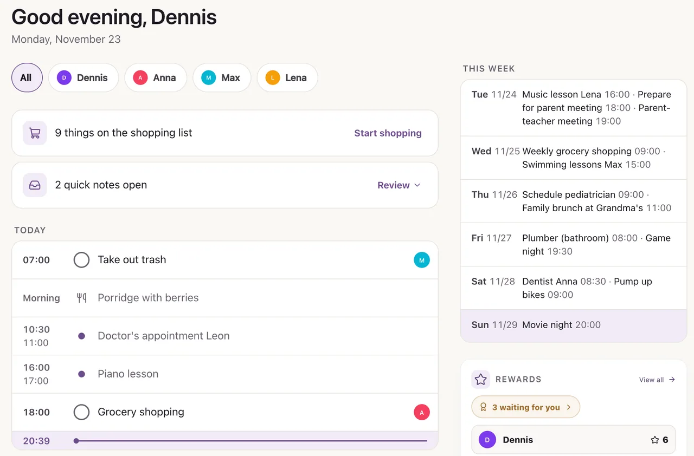
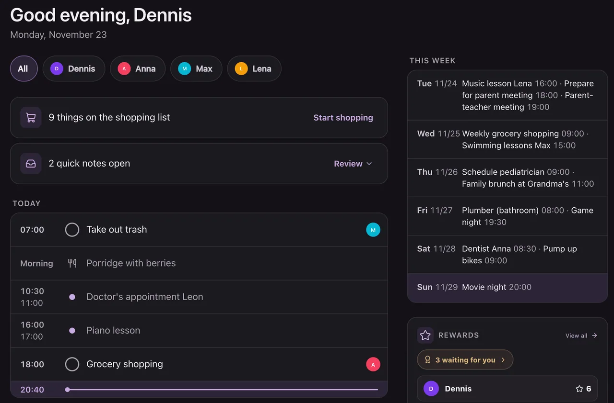
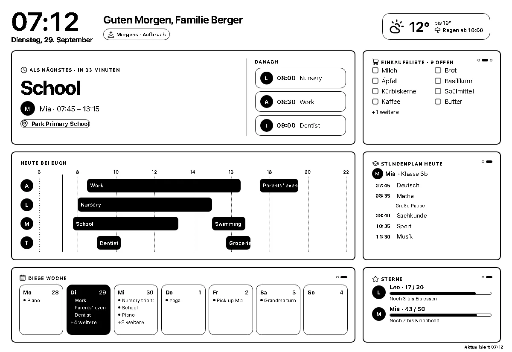

07:12
Before anyone puts on shoes
Who needs to be where today?
Before coffee is poured, the wall display shows Mia heading to school, Leo's nursery drop-off, and the dentist at 09:00. Open Tribu on a phone or laptop for the same day in one timeline, filterable by person. The Shared Home Display also supports high-contrast E-Ink frames.



Monochrome layout for E-Ink frames (shown in German, one of 24 UI languages).